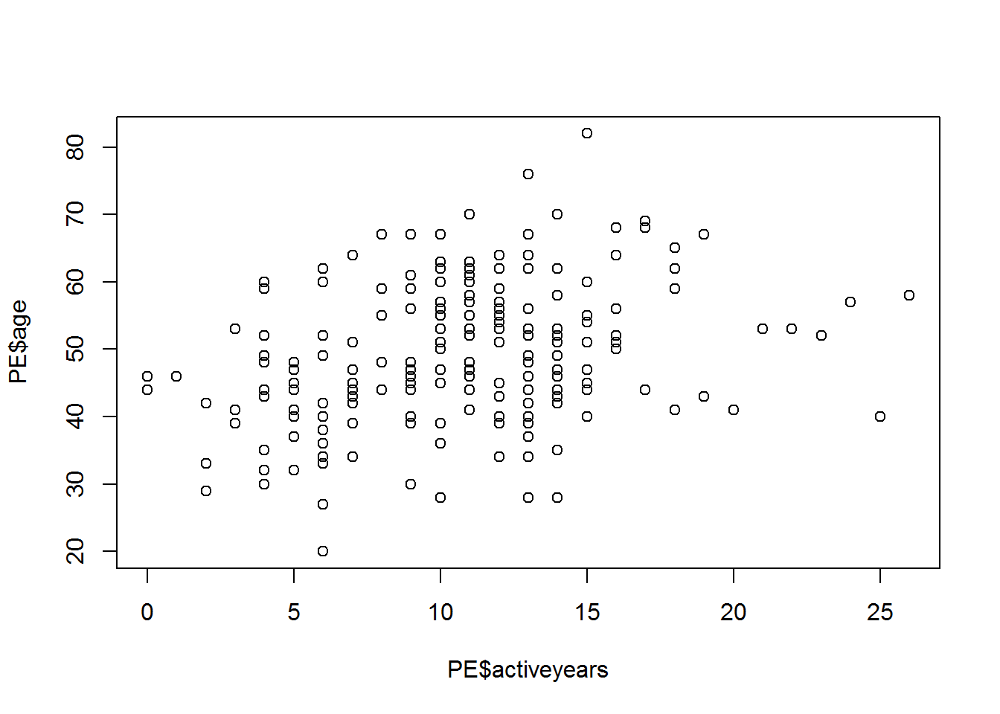
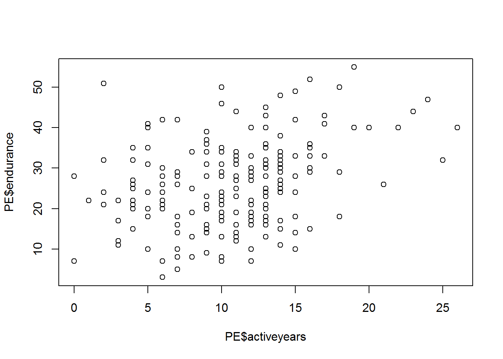
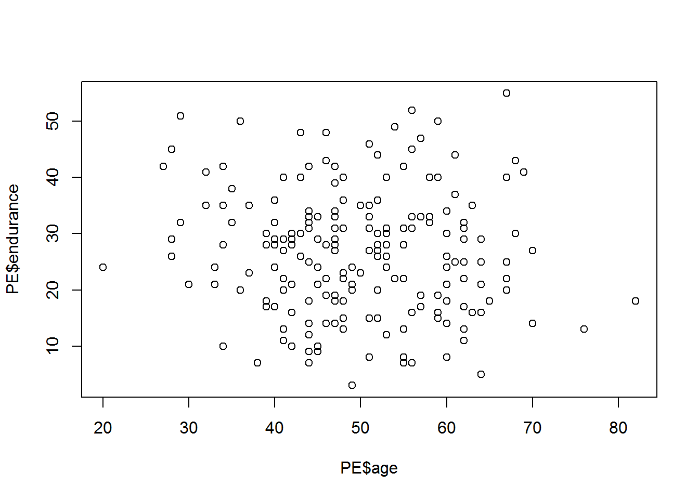
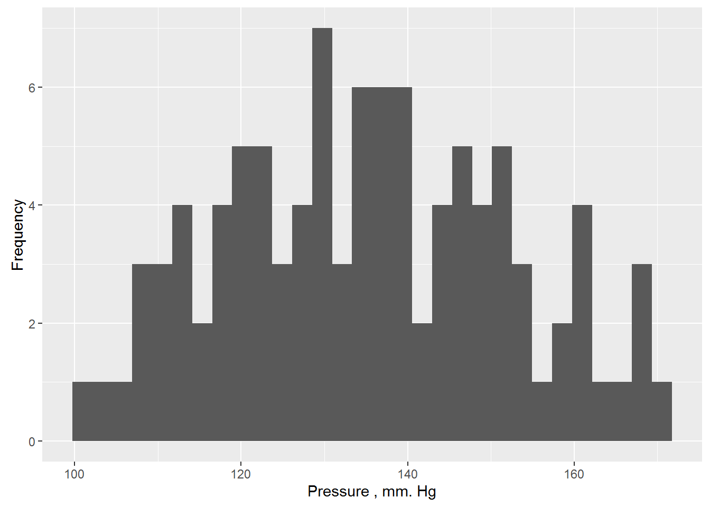
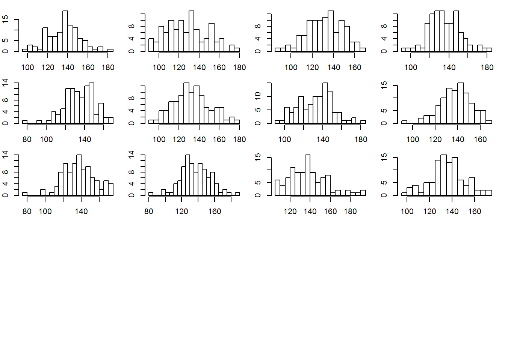
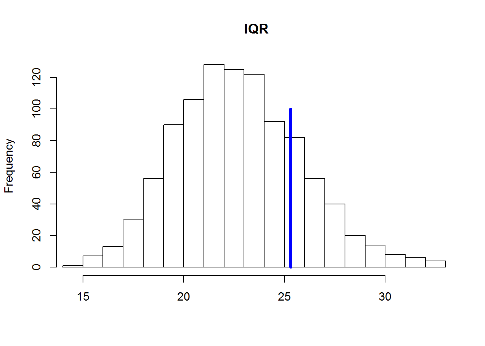
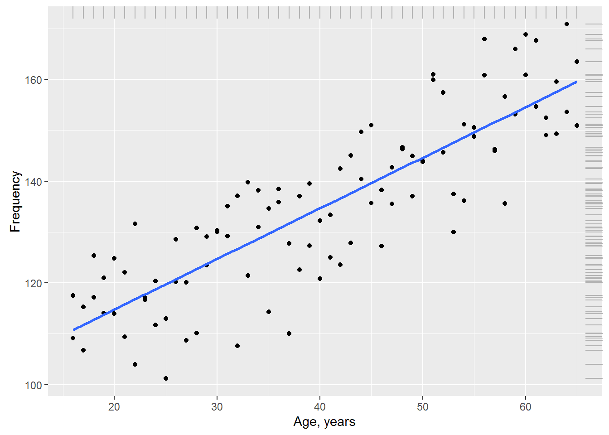

Let’s create two vectors, the covariance between them, we try to calculate
A=1:3
B=c(3,6,7)The General idea of covariance is to determine the extent mutually changes of two groups of data, i.e. how often a change in one value will coincide with a similar change in the other variable. As the rate of change of the magnitude we will use the deviation from the average. Calculate the deviation from the mean for each of our vectors.
diff_A <- A - mean(A)
diff_B <- B - mean(B)To determine the reciprocal change of variables, we multiply their deviations from the mean and proserum results. Obviously, the covariance will be larger, the more we match the signs of the deviations from the mean, and therefore their “direction”. It is also clear that in order for the covariance of samples of different sizes were comparable, we must divide the sum by the sample size:
cov <- sum(diff_A*diff_B)/ (length(A)-1)Separately to calculate the standard deviation we will calculate the squared deviations from the mean for each vector
sq_diff_A <- diff_A^2
sq_diff_B <- diff_B^2Summing the squared deviations by dividing them by the sample size minus 1 and is obtained from taking the square root, we get standard deviation.
sd_A <- sqrt(sum(sq_diff_A)/(length(A)-1))
sd_B <- sqrt(sum(sq_diff_B)/(length(B)-1))Then the correlation coefficient of the two quantities will be called the ratio of the magnitude of their covariance to the product of the standard deviations of each of these variables.
correlation <- cov/(sd_A*sd_B)
correlation## [1] 0.9607689The correctness of our calculations we can verify by using the function cor() R
cor(A,B)## [1] 0.9607689The standard command for opening files allows you to just open a URL. Open data for physical stability in variable PE
PE <- read.table("http://assets.datacamp.com/course/Conway/Lab_Data/Stats1.13.Lab.04.txt", header=TRUE)Use the describe function from the psych package, which gives us more detailed descriptive statistics for all the columns of the table than the standard tools.
library("psych")
describe(PE)## vars n mean sd median trimmed mad min max range skew
## pid 1 200 101.81 58.85 101.5 101.71 74.87 1 204 203 0.01
## age 2 200 49.41 10.48 48.0 49.46 10.38 20 82 62 0.06
## activeyears 3 200 10.68 4.69 11.0 10.57 4.45 0 26 26 0.30
## endurance 4 200 26.50 10.84 27.0 26.22 10.38 3 55 52 0.22
## kurtosis se
## pid -1.21 4.16
## age -0.14 0.74
## activeyears 0.46 0.33
## endurance -0.44 0.77Construct graphs of the mutual dependence of the variables age(age), number of years in the sport (activeyears) and physical stockist(endurance).
plot(PE$age~PE$activeyears)
plot(PE$endurance~PE$activeyears)
plot(PE$endurance~PE$age)
Will conduct a baseline test of correlation for all variables
round(cor(PE[,-1]), 2) ## age activeyears endurance
## age 1.00 0.33 -0.08
## activeyears 0.33 1.00 0.33
## endurance -0.08 0.33 1.00Will do more tests. If the null hypothesis of no correlation can be rejected with a significance level of 5%, the relationship between the variables is significantly different from zero with 95% confidence interval.
cor.test(PE$age, PE$activeyears)##
## Pearson's product-moment correlation
##
## data: PE$age and PE$activeyears
## t = 4.9022, df = 198, p-value = 1.969e-06
## alternative hypothesis: true correlation is not equal to 0
## 95 percent confidence interval:
## 0.1993491 0.4473145
## sample estimates:
## cor
## 0.3289909cor.test(PE$age, PE$endurance)##
## Pearson's product-moment correlation
##
## data: PE$age and PE$endurance
## t = -1.1981, df = 198, p-value = 0.2323
## alternative hypothesis: true correlation is not equal to 0
## 95 percent confidence interval:
## -0.22097811 0.05454491
## sample estimates:
## cor
## -0.08483813cor.test(PE$endurance, PE$activeyears)##
## Pearson's product-moment correlation
##
## data: PE$endurance and PE$activeyears
## t = 4.8613, df = 198, p-value = 2.37e-06
## alternative hypothesis: true correlation is not equal to 0
## 95 percent confidence interval:
## 0.1967110 0.4451154
## sample estimates:
## cor
## 0.3265402You have to be careful with the interpretation of correlation coefficients in the analysis of unrepresentative samples. In this exercise you will learn how to split a dataset into subsets, and to see to what extent this may change the correlation coefficients.
Upload data for issledovaniy consequences of concussion of the brain caused by sports-related injuries, which includes survey data as a reference gruppoy and groups of athletes who suffered from concussion.
impact=read.csv("https://dl.dropboxusercontent.com/s/7ubjig9z5hmv858/impact.csv?dl=0")
describe(impact)## vars n mean sd median trimmed mad min max range
## subject 1 40 20.50 11.69 20.50 20.50 14.83 1.00 40.00 39.00
## condition* 2 40 1.50 0.51 1.50 1.50 0.74 1.00 2.00 1.00
## vermem1 3 40 89.75 6.44 91.00 90.44 6.67 75.00 98.00 23.00
## vismem1 4 40 74.88 8.60 75.00 74.97 9.64 59.00 91.00 32.00
## vms1 5 40 34.03 3.90 33.50 34.02 3.62 26.29 41.87 15.58
## rt1 6 40 0.67 0.15 0.65 0.66 0.13 0.42 1.20 0.78
## ic1 7 40 8.28 2.05 8.50 8.38 2.22 2.00 12.00 10.00
## sym1 8 40 0.05 0.22 0.00 0.00 0.00 0.00 1.00 1.00
## vermem2 9 40 82.00 11.02 85.00 82.97 9.64 59.00 97.00 38.00
## vismem2 10 40 71.90 8.42 72.00 72.19 10.38 54.00 86.00 32.00
## vms2 11 40 35.83 8.66 35.15 34.98 6.89 20.15 60.77 40.62
## rt2 12 40 0.67 0.22 0.65 0.65 0.13 0.19 1.30 1.11
## ic2 13 40 6.75 2.98 7.00 6.81 2.97 1.00 12.00 11.00
## sym2 14 40 13.88 15.32 7.00 12.38 10.38 0.00 43.00 43.00
## skew kurtosis se
## subject 0.00 -1.29 1.85
## condition* 0.00 -2.05 0.08
## vermem1 -0.70 -0.51 1.02
## vismem1 -0.11 -0.96 1.36
## vms1 0.08 -0.75 0.62
## rt1 1.14 2.21 0.02
## ic1 -0.57 0.36 0.32
## sym1 3.98 14.16 0.03
## vermem2 -0.65 -0.81 1.74
## vismem2 -0.28 -0.87 1.33
## vms2 0.86 0.65 1.37
## rt2 0.93 1.29 0.03
## ic2 -0.16 -1.06 0.47
## sym2 0.44 -1.47 2.42Calculate the coefficients of correlation between coefficiente visual and verbal memory patients.
entirecorr <- round(cor(impact$vismem2,impact$vermem2),2)Use the describeBy command from the package psych let’s see descriptive statistics for variables in this table, grouped by categories of the variable condition - the condition of the respondents. Ie view descriptive statistics for the control and target groups.
describeBy(impact, impact$condition)## $concussed
## vars n mean sd median trimmed mad min max range
## subject 1 20 30.50 5.92 30.50 30.50 7.41 21.00 40.00 19.00
## condition* 2 20 1.00 0.00 1.00 1.00 0.00 1.00 1.00 0.00
## vermem1 3 20 89.65 7.17 92.50 90.56 5.93 75.00 97.00 22.00
## vismem1 4 20 74.75 8.03 74.00 74.25 8.15 63.00 91.00 28.00
## vms1 5 20 33.20 3.62 33.09 33.27 3.32 26.29 39.18 12.89
## rt1 6 20 0.66 0.17 0.63 0.64 0.13 0.42 1.20 0.78
## ic1 7 20 8.55 1.64 9.00 8.62 1.48 5.00 11.00 6.00
## sym1 8 20 0.05 0.22 0.00 0.00 0.00 0.00 1.00 1.00
## vermem2 9 20 74.05 9.86 74.00 73.88 11.86 59.00 91.00 32.00
## vismem2 10 20 69.20 8.38 69.50 69.62 10.38 54.00 80.00 26.00
## vms2 11 20 38.27 10.01 35.15 37.32 7.73 25.70 60.77 35.07
## rt2 12 20 0.78 0.23 0.70 0.74 0.11 0.51 1.30 0.79
## ic2 13 20 5.00 2.53 5.00 4.88 2.97 1.00 11.00 10.00
## sym2 14 20 27.65 9.07 27.00 27.75 11.12 13.00 43.00 30.00
## skew kurtosis se
## subject 0.00 -1.38 1.32
## condition* NaN NaN 0.00
## vermem1 -0.79 -0.70 1.60
## vismem1 0.45 -0.72 1.80
## vms1 -0.13 -0.78 0.81
## rt1 1.38 2.41 0.04
## ic1 -0.39 -0.81 0.37
## sym1 3.82 13.29 0.05
## vermem2 0.07 -1.24 2.21
## vismem2 -0.27 -1.26 1.87
## vms2 0.77 -0.57 2.24
## rt2 1.09 -0.10 0.05
## ic2 0.39 -0.28 0.57
## sym2 -0.11 -1.25 2.03
##
## $control
## vars n mean sd median trimmed mad min max range skew
## subject 1 20 10.50 5.92 10.50 10.50 7.41 1.00 20.00 19.00 0.00
## condition* 2 20 2.00 0.00 2.00 2.00 0.00 2.00 2.00 0.00 NaN
## vermem1 3 20 89.85 5.82 90.00 90.31 7.41 78.00 98.00 20.00 -0.41
## vismem1 4 20 75.00 9.34 77.00 75.50 9.64 59.00 88.00 29.00 -0.46
## vms1 5 20 34.86 4.09 34.39 34.85 4.92 27.36 41.87 14.51 0.09
## rt1 6 20 0.67 0.13 0.66 0.67 0.13 0.42 1.00 0.58 0.47
## ic1 7 20 8.00 2.41 7.50 8.12 2.22 2.00 12.00 10.00 -0.41
## sym1 8 20 0.05 0.22 0.00 0.00 0.00 0.00 1.00 1.00 3.82
## vermem2 9 20 89.95 4.36 90.50 90.06 5.19 81.00 97.00 16.00 -0.25
## vismem2 10 20 74.60 7.76 74.50 75.00 8.15 60.00 86.00 26.00 -0.23
## vms2 11 20 33.40 6.44 34.54 33.52 6.30 20.15 44.28 24.13 -0.25
## rt2 12 20 0.57 0.16 0.56 0.57 0.13 0.19 0.90 0.71 -0.16
## ic2 13 20 8.50 2.31 9.00 8.69 1.48 3.00 12.00 9.00 -0.73
## sym2 14 20 0.10 0.31 0.00 0.00 0.00 0.00 1.00 1.00 2.47
## kurtosis se
## subject -1.38 1.32
## condition* NaN 0.00
## vermem1 -0.87 1.30
## vismem1 -1.27 2.09
## vms1 -1.19 0.91
## rt1 -0.02 0.03
## ic1 -0.17 0.54
## sym1 13.29 0.05
## vermem2 -1.02 0.97
## vismem2 -1.11 1.73
## vms2 -0.77 1.44
## rt2 0.06 0.04
## ic2 -0.32 0.52
## sym2 4.32 0.07
##
## attr(,"call")
## by.data.frame(data = x, INDICES = group, FUN = describe, type = type)Make 2 sub-samples: control(control) and contused(concussed)
control <- subset(impact, condition=="control")
concussed <- subset(impact, condition=="concussed")Calculate the coefficients of correlatio for each subsample.
controlcorr <- round(cor(control$vismem2,control$vermem2),2)
concussedcorr <- round(cor(concussed$vismem2,concussed$vermem2),2)Derive all the values of the coefficients of correlation at the same time
correlations <- cbind(entirecorr, controlcorr, concussedcorr)
correlations## entirecorr controlcorr concussedcorr
## [1,] 0.45 0.37 0.35As an example, consider the systolic blood pressure in people (expressed in mm Hg). It is obvious that blood pressure level cannot be the same for all people – during the examination of a random sample, we almost always will see some variation of the values of this variable, although some values will occur the bowl to the other. We form a sample of a possible distribution of 100 values of blood pressure (we will not specify the mechanism for receiving the data and assume that this is a real measurement from a real randomly selected people, differing in age, sex, body weight, and perhaps some other characteristics):
y <- c( 109.14, 117.55, 106.76, 115.26, 117.13, 125.39, 121.03, 114.03, 124.83, 113.92, 122.04, 109.41, 131.61, 103.93, 116.64, 117.06, 111.73, 120.41, 112.98, 101.20, 120.19, 128.53, 120.14, 108.70, 130.77, 110.16, 129.07, 123.46, 130.02, 130.31, 135.06, 129.17, 137.08, 107.62, 139.77, 121.47, 130.95, 138.15, 114.31, 134.58, 135.86, 138.49, 110.01, 127.80, 122.57, 136.99, 139.53, 127.34, 132.26, 120.85, 124.99, 133.36, 142.46, 123.58, 145.05, 127.83, 140.42, 149.64, 151.01, 135.69, 138.25, 127.24, 135.55, 142.76, 146.67, 146.33, 137.00, 145.00, 143.98, 143.81, 159.92, 160.97, 157.45, 145.68, 129.98, 137.45, 151.22, 136.10, 150.60, 148.79, 167.93, 160.85, 146.28, 145.97, 135.59, 156.62, 153.12, 165.96, 160.94, 168.87, 167.64, 154.64, 152.46, 149.03, 159.56, 149.31, 153.56, 170.87, 163.52, 150.97)
c(mean(y), sd(y)) # mean & sd## [1] 135.15730 16.96017shapiro.test(y)##
## Shapiro-Wilk normality test
##
## data: y
## W = 0.98263, p-value = 0.2121library(ggplot2) # graphical distribution##
## Attaching package: 'ggplot2'## The following objects are masked from 'package:psych':
##
## %+%, alphaggplot(data = data.frame(y), aes(x = y)) + geom_histogram() +
ylab("Frequency") + xlab("Pressure , mm. Hg")## `stat_bin()` using `bins = 30`. Pick better value with `binwidth`.
Greek letters μ and σ denote the true (also General) settings models that are usually unknown to us. However, we can estimate parameter values at a corresponding sample statistics. Thus, in the case of more than 100 values of systolic blood pressure, selective mean and standard deviation are 135.16 mm Hg. and 16.96 mm Hg. respectively. Assuming that the data really come from a normally distributed population, we can write our model in the form yi ~ N(135.16, 16.96). This model can be used to predict blood pressure, but for all people predicted value will be same and will be equal to μ.The usual way of writing this model is as follows:
\(y_{i}=135.16+\epsilon_{i}\),
where ei is the remnants of a model having a normal distribution with a mean of 0 and a standard deviation of 16.96: ei ~ N(0, 16.96). Balances are calculated as the difference between the actually observed values of the variable Y and the values predicted by the model (in this example, ei = yi - 135.16). On the other hand this record is nothing like linear regression model which has no predictor, which is often called the “null model” or “null model” (eng. null models).
New data on the basis of this simple model can be easily generated in R with function rnorm():
set.seed(101) # for reproducible result
y.new.1 <- rnorm(n = 100, mean = 135.16, sd = 16.96)
set.seed(101)
y.new.2 <- 135.16 + rnorm(n = 100, mean = 0, sd = 16.96)Check identical if both vectors?
all(y.new.1 == y.new.2)## [1] TRUENow you need to remember that the parameters of our null model are only point estimates of the true parameters, and that there will always be uncertainty about how accurately these sample point estimates. In the above commands, this uncertainty was not taken into account: when creating vectors y.new.1 and y.new.2 the sample estimates of the mean and standard deviation of blood pressure were considered as the parameters of the population. Depending on the task, this approach may be sufficient. However, we will take another step and try to take into account the uncertainty in the point estimates of the model parameters. In simulations, we use the function lm(), which is designed to fit linear regression models. There is nothing surprising here – after all, we already know that our simple model of blood pressure can be considered as a linear regression model which has no predictor:
y.lm <- lm(y ~ 1) # the formula to evaluate only a free member
summary(y.lm)##
## Call:
## lm(formula = y ~ 1)
##
## Residuals:
## Min 1Q Median 3Q Max
## -33.957 -13.260 0.413 12.043 35.713
##
## Coefficients:
## Estimate Std. Error t value Pr(>|t|)
## (Intercept) 135.157 1.696 79.69 <2e-16 ***
## ---
## Signif. codes: 0 '***' 0.001 '**' 0.01 '*' 0.05 '.' 0.1 ' ' 1
##
## Residual standard error: 16.96 on 99 degrees of freedomAs follows from the presented results, free term customized model (Intercept) exactly coincides with an average value of the data (135.16 mmHg. calendar) and the standard deviation of the residues of the model (Residual standard error) coincides with the standard deviation of these data (16.96 mm Hg. calendar). Importantly, however, we also calculated estimates of the standard error of the average value equal to 1.696 (see column Std. Error to the intersection with a line (Intercept)). By definition, the standard error of a parameter is the standard deviation of the [normal] distribution of values of this parameter, calculated on samples of equal size from the same population. We can use this fact to account for uncertainty in the point estimates of the model parameters when generating new data. So, knowing the sample parameter estimates and their standard errors, we can: a) generate a few possible values for these parameters (i.e., to create multiple implementations of the same model, varying the values of parameters a) and b) to generate new data based on each of these alternative implementations of the model.
library(arm)## Loading required package: MASS## Loading required package: Matrix## Loading required package: lme4##
## arm (Version 1.9-1, built: 2016-8-21)## Working directory is D:/YandexDisk/Jobs/EDDY/Environmental Modelling/environemental-modelling.github.io##
## Attaching package: 'arm'## The following objects are masked from 'package:psych':
##
## logit, rescale, simset.seed(102) # for reproducible result
y.sim <- sim(y.lm, 5)y.sim an object of class S4, which contains slots coef (coefficients of the model) and the sigma (STD. deviation of residues of the model):
str(y.sim)## Formal class 'sim' [package "arm"] with 2 slots
## ..@ coef : num [1:5, 1] 136 134 137 136 137
## .. ..- attr(*, "dimnames")=List of 2
## .. .. ..$ : NULL
## .. .. ..$ : chr "(Intercept)"
## ..@ sigma: num [1:5] 16.8 18.9 17.3 16.7 15Recoverable alternative implementation of the mean of y.sim:
y.sim@coef## (Intercept)
## [1,] 136.4780
## [2,] 134.3288
## [3,] 136.7079
## [4,] 136.0775
## [5,] 137.3250Extracted an alternative implementation of article deviations of the residues:
y.sim@sigma## [1] 16.82947 18.87039 17.30262 16.74308 15.00630Of course, 5 realizations of the model is completely insufficient to make any solid conclusions. Increase this number to 1000:
set.seed(102) # for reproducible result
y.sim <- sim(y.lm, 1000)Initialize empty matrix in which we will store data generated based on 1000 alternative realizations of the model:
y.rep <- array(NA, c(1000, 100))
# Filling matrix y.rep imitated data:
for(s in 1:1000){
y.rep[s, ] <- rnorm(100, y.sim@coef[s], y.sim@sigma[s])
}To better understand what we just did, draw the histogram of the sampling distribution of blood pressure readings is generated based on, for example, the first 12 realizations of the null model:
par(mfrow = c(5, 4), mar = c(2, 2, 1, 1))
for(s in 1: 12){ hist(y.rep[s, ], xlab = "", ylab = "",
breaks = 20, main = "")}
Calculate the interquartile range (IFR) for each simulated data set and compare the resulting distribution of the 1000 values with CALF real data. To calculate the CALF in the R function IQR():
test.IQR <- apply(y.rep, MARGIN = 1, FUN = IQR)Derive a histogram of values of the CALF, calculated for each of the 1000 simulated distributions of blood pressure. A vertical blue line will show the CALF to the actually observed values of blood pressure:
Initialize empty matrix in which we will store data generated based on 1000 alternative realizations of the model:
hist(test.IQR, xlim = range(IQR(y), test.IQR), main = "IQR", xlab = "", ylab = "Frequency", breaks = 20)
lines(rep(IQR(y), 2), c(0, 100), col = "blue", lwd = 4)
In the above illustration clearly shows that the values of IQR for the simulated data is systematically underestimated compared to the real data. This suggests that the null model underestimates the overall level of variation of the actual values of blood pressure. The reason for this may be that we do not consider the effect on blood pressure any important factors (e.g., age, gender, diet, health, etc.). Consider how to expand our null model, adding one of these factors.
Suppose that in addition to blood pressure, we also measured each the subject of his/her age (in years). Show graphically the relationship between age and systolic blood pressure. For visualization the trend in the data and add the regression line is blue:
# The values of age:
x <- rep(seq(16, 65, 1), each = 2)
# Combine the values of age and blood pressure in one table
Data <- data.frame(Age = x, BP = y)
ggplot(data = Data, aes(x = Age, BP)) + geom_point() +
geom_smooth(method = "lm", se = FALSE) +
geom_rug(color = "gray70", sides = "tr") +
ylab("Frequency") + xlab("Age, years")
The graph shows that between blood pressure and age there is a marked linear relationship: despite some variation of the observations, with increasing age, the average pressure also increases. We can account for this systematic change in the mean blood pressure by adding age (Age) in our null model: \(y_{i}=N\big(\beta+\beta_{i}\times Age_{i},\sigma\big)\),
summary(lm(BP ~ Age, data = Data))##
## Call:
## lm(formula = BP ~ Age, data = Data)
##
## Residuals:
## Min 1Q Median 3Q Max
## -21.6644 -6.2491 0.0072 6.3101 17.3484
##
## Coefficients:
## Estimate Std. Error t value Pr(>|t|)
## (Intercept) 94.85498 2.66731 35.56 <2e-16 ***
## Age 0.99512 0.06204 16.04 <2e-16 ***
## ---
## Signif. codes: 0 '***' 0.001 '**' 0.01 '*' 0.05 '.' 0.1 ' ' 1
##
## Residual standard error: 8.953 on 98 degrees of freedom
## Multiple R-squared: 0.7242, Adjusted R-squared: 0.7214
## F-statistic: 257.3 on 1 and 98 DF, p-value: < 2.2e-16According to the results, model blood pressure can be recorded as \(y_{i}=N\big(94.853+0.995\times Age_{i}, 8.953\big)\) or \(y_{i}=94.853+0.995\times Age_{i} + \epsilon_{i}, \epsilon_{i} = N\big(of 0.8.953\big)\)
This model is graphically depicted in the above graph in the form of the trend line. Please note: in addition to the significance of the parameters customized models (p << 0.001 in both cases), the standard deviation of the residues is 8.853, which is almost 2 times less than that of the null model (16.96). This indicates that the model including age as a predictor, much better describes the variation of blood pressures at the 100 surveyed subjects than our original model without parameter.
This conclusion is confirmed by the fact that the result of performing simulations similar to that described above, the value of the interquartile range for the original data is located in the center of the distribution of simulated values of CALVES, indicating the absence of systematic differences between simulated and observed data. R language code and the resulting histogram we are not shown suggesting to make the calculations to the reader.
Now it is time to reveal a little secret: the fact that the model including the age, much better describes the original data, not surprisingly, since these observations were… generated based on the model
\(y_{i}=97.078+0.949\times Age_{i} + \epsilon_{i}, \epsilon_{i} = N\big(0,9.563\big)\) as follows:
set.seed(101)
y <- rnorm(100, mean = 97.078 + 0.949*x, 9.563)The last model conceived to demonstrate the principles under discussion, was used as the “true” (eng. true model) in the sense that it described a General population. In other words, we assumed that we had the ability to simultaneously measure the pressure of all of the existing people and the obtained data describes this “true” model. In a real situation neither the structure of the (systematic part + residues) nor the values of the parameters of the true model, the researcher usually unknown.
All he has is a set of experimental data, often unrepresentative and highly “noisy”. With this information and a good understanding of the phenomenon under study (in the sense of what the predictors considered important enough for consideration), the researcher can only hope to approach the structure of the true model and estimate its parameters with a certain accuracy. Unfortunately, such success is not always guaranteed.